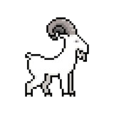

Les animaux sont des entités passives du jeu. Il y en a différents types, permettant d'obtenir différentes ressources. Chaque animal possède un niveau de rareté. Les animaux sont entreposés dans des enclos, et peuvent faire diverses actions, comme dormir, se reproduire, manger, mourir ou tomber malade.
Les animaux communs
La Vache
La vache est un animal commun. Le joueur pourra récolter du lait depuis les vaches. Le joueur pourra également amener l'animal à l'abattoir, ce qui permettra d'obtenir de la viande de bœuf et du cuir.
Le Cochon
Le cochon est un animal commun. Le joueur pourra amener l'animal à l'abattoir, ce qui permettra d'obtenir de la viande de porc.
La Poule
La poule est un animal commun. Le joueur pourra récolter des œufs depuis les poules. Le joueur pourra également amener l'animal à l'abattoir, ce qui permettra d'obtenir du poulet.
Le mouton
Le mouton est un animal commun. Le joueur pourra récolter de la laine depuis les moutons. Le joueur pourra également amener l'animal à l'abattoir, ce qui permettra d'obtenir de la viande de mouton.
Les animaux rares
La Chèvre
La chèvre est un animal rare. Le joueur pourra récolter du lait depuis les chèvres. Le joueur pourra également amener l'animal à l'abattoir, ce qui permettra d'obtenir de la viande et des cornes.

Le Canard
Le canard est un animal rare. Le joueur pourra amener l'animal à l'abattoir, ce qui permettra d'obtenir de la viande de canard.
Le Lapin
Le Lapin est un animal rare. Le joueur pourra amener l'animal à l'abattoir, ce qui permettra d'obtenir de la viande. Les lapins pourront également être revendus vivants.
Les animaux épiques
L'Autruche
La chèvre est un animal épique. Le joueur pourra récolter des œufs depuis les autruches.
Le Crocodile
Le crocodile est un animal épique. Le joueur pourra amener l'animal à l'abattoir, ce qui permettra d'obtenir de la viande et des écailles.
Les animaux légendaires
Le Dodo
Le dodo est un animal légendaire. Le joueur pourra récolter des œufs depuis les dodos. Le joueur pourra amener l'animal à l'abattoir, ce qui permettra d'obtenir de la viande.